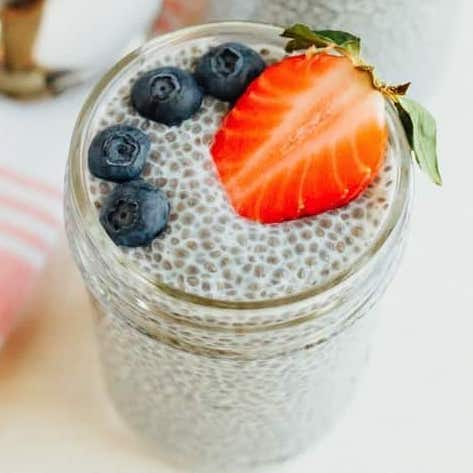
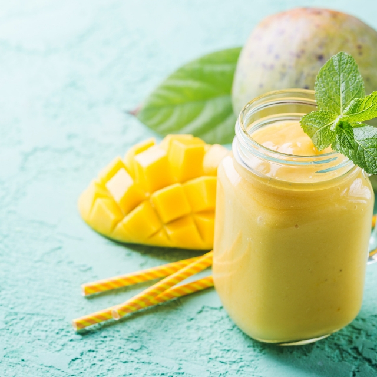

1: 2 slices of bread 2: 1/4 cup plain Greek-style yogurt ( I use Kite Hill) 3: 1 teaspoon honey or maple syrup 4: 1/2 cup fresh berries 5: 2 mint leaves, chopped
1: Add 1/2 cup of nut milk and 2 tablespoons of chia seeds to a jar 2: Stir in any optional sweeteners, like maple syrup and vanilla extract 3: Let sit for a couple of hours or overnight, then stir again before serving
1: 2 large mangos, peeled and cubed (3 cups) 2: 2 cups ice cubes 3: 1/2 cup orange juice 4: 1 1/2 teaspoons McCormick® Raspberry Extract 5: 1 teaspoon McCormick® Imitation Rum Extract